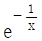
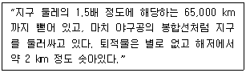
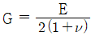
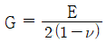
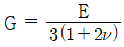
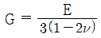
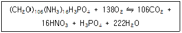

해양자원개발기사 (2009-05-10 기출문제)
1과목: 해양학개론
1. 대기와 해양 간의 탄소 교환에 중요한 역할을 하는 CO2의 분압과 해수의 pH에 관련된 내용이 옳게 설명된 것은?
- 해양보다 대기 중의 CO2 분압이 높으면 CO2는 해양으로부터 대기로 공급된다.
- 해수의 pH가 감소하면 CO2는 해양으로부터 대기로 공급된다.
- 해양의 기초생산이 활발하면 CO2는 해양으로부터 대기로 공급된다.
- 기초생산이 적고 pH가 적은 저위도 해역은 CO2가 대기로부터 해양으로 공급된다.
(정답률: 알수없음)

2. 해수 중 인산염 농도변화를 설명한 내용 중 잘못된 것은?
- 겨울철에 높은 농도를 보인다.
- 봄철에 낮은 농도를 보인다.
- 하루 중 해뜨기 직전에 최소 농도를 보인다.
- 식물의 활동이 왕성한 시간에 최소 농도를 보인다.
(정답률: 알수없음)
3. 기조력의 크기와 달까지의 거리와의 관계가 옳은 것은?
- 기조력은 달까지의 거리에 반비례
- 기조력은 달까지의 거리의 제곱에 반비례
- 기조력은 달까지의 거리의 3승에 반비례
- 기조력은 달까지의 거리의 4승에 반비례
(정답률: 알수없음)
4. 해빈 물질의 특성과 거리가 먼 것은?
- 분급이 양호하다.
- 원마도는 둥근 상태이다.
- 대부분 진흙으로 구성된다.
- 연흔이 출현한다.
(정답률: 알수없음)
5. 염분 측정에 이용되는 대표적인 물리적 성질은?
- 지구자기
- 빛의 굴절
- 산성도
- 전기전도도
(정답률: 알수없음)
6. Ekman의 취송류이론에서 상부마찰심도의 해류는 해표면 해류의 몇 배로 나타나는가?
- e

- e-1
- e-x
(정답률: 알수없음)
7. 열점(Hot Spot)과 관계가 가장 깊은 것은?
- 솔로몬 제도
- 하와이 제도
- 알류샨 열도
- 파푸아뉴우기니아
(정답률: 알수없음)
8. 해양과 대기의 상호작용을 설명한 내용 중 틀린 것은?
- 바닷물의 비열이 높기 때문에 바닷물 1g 을 1℃ 높이는데 1cal 이상이 필요하다.
- 해양과 대기의 가열이나 냉각이 있음에도 평균적인 열수지의 균형을 이루고 있다.
- 해류와 대기의 날씨는 물과 공기의 불균등한 태양 가열에 의한 결과이다.
- 해류는 열대에서 극지방으로 열을 운반한다.
(정답률: 알수없음)
9. 해양판과 해양판이 수렴하는 수렴경계면에서 나타나는 대표적인 해저지형(장소)는?
- 동태평양산맥
- 알류산 열도
- 하와이 열도
- 동아프리카 열곡대
(정답률: 알수없음)
10. 대양에서 영구수온약층(permanent thermocline)이 가장 깊은 수심에서 나타나는 해역은?
- 적도부근
- 위도 20° 부근
- 위도 40° 부근
- 극지방
(정답률: 알수없음)
11. 밀도류에 대한 설명 중 옳은 것은?
- 해수의 용존산소와 깊은 관계가 있다.
- 밀도차를 없애기 위해 생기는 해수의 유동이다.
- 바람의 방향과 일치한다.
- 원인으로는 태양의 인력이 있다.
(정답률: 알수없음)
12. 심해저 망간단괴를 상대적으로 많이 채취할 수 있는 장점은 있으나 주변의 퇴적물을 채취하지 못하는 단점을 가진 방법은?
- Grab식
- Dredge식
- Piston식
- Siphon식
(정답률: 알수없음)
13. 파랑이 심해에서 전파될 때 파의 속도는?
- 파장에만 관계
- 파장과 수심 모두 관계
- 수심에만 관계
- 파장과 수심 모두 무관
(정답률: 알수없음)
14. 다음 중 지구 내부의 열을 공급하는 가장 주된 작용은?
- 방사성 물질의 붕괴
- 조석 작용
- 태양열
- 맨틀 대류
(정답률: 알수없음)
15. 해양의 표면염분 분포에 가장 큰 영향을 주는 것은?
- 증발 - 강수량의 차
- 바람분포
- 수온분포
- 심층해류
(정답률: 알수없음)
16. 망간단괴 성분 중 경제적인 가치가 없는 것은?
- 니켈
- 코발트
- 망간
- 철
(정답률: 알수없음)
17. 고기압 지역에 나타나는 현상으로 맞는 것은?
- 바람은 북반구에서 반시계 방향으로 불어 들어온다.
- 상층부에 하강기류가 발생한다.
- 구름이 생성되고 비가 온다.
- 지표면에서는 공기가 수렴한다.
(정답률: 알수없음)
18. 미나마타병과 이타이 이타이병의 원인이 되는 해양오염 물질은 각각 무엇인가?
- 납, 구리
- 수은, 카드뮴
- 구리, 수은
- 납, 카드뮴
(정답률: 알수없음)
19. 엘니뇨(El Nino) 현상은 어디에서 주로 일어나는가?
- 동남아시아 연안
- 적도태평양의 동부
- 북서아메리카 연안
- 남동태평양 전역
(정답률: 알수없음)
20. 용승(Upwelling) 해역에 대한 설명 중 틀린 것은?
- 저층의 물이 표층으로 올라온다.
- 해안선이 남북방향으로 놓인 곳에서는 용승이 있으나 동서방향으로 놓인 곳에서는 없다.
- 주변해역보다 표면 수온이 낮다.
- 영양염이 풍부하여 생물활동이 왕성하다.
(정답률: 알수없음)
2과목: 지질해양학
21. 신생대 4기의 해수면 변화의 주 원인은?
- 해저확장
- 빙하
- 화산활동
- 지진
(정답률: 알수없음)
22. 마지막 빙하기 때 해수면이 최대로 낮아졌을 때는?
- 8 × 103 년 전
- 18 × 103 년 전
- 28 × 103 년 전
- 38 × 103 년 전
(정답률: 알수없음)
23. 해구(trench)에 대한 설명으로 틀린 것은?
- 해저에서 가장 깊은 부분의 좁고 긴 형태로서 굽어 휜 모양의 지형이다.
- 활화산대의 호상열도와 관련되어 있다.
- 대부분이 대서양의 주위에 있다.
- 저열류량으로 특징지어진다.
(정답률: 알수없음)
24. 탄성파 굴절법에 의해 얻어진 Layer 3를 구성하는 주요 암석은?
- 현무암(Basalt)
- 고화된 퇴적물(Consolidated Sediment)
- 반려암(Gabbro)
- 안산암(Andesite)
(정답률: 알수없음)
25. 해저지형으로서 기요(guyot)는 무엇을 의미하는가?
- 해저지각의 평행이동
- 해저지각의 상하운동
- 화산열도의 소멸기
- 해저 단층운동
(정답률: 알수없음)
26. 지금까지 밝혀진 해저확장의 메카니즘 중 가장 중요한 것은?
- 지구자전의 힘으로 해저가 확장된다.
- 맨틀 상부의 대류현상으로 해저가 확장된다.
- 지각 자체의 단층작용에 의하여 해저가 확장된다.
- 달의 힘으로 해저가 확장된다.
(정답률: 알수없음)
27. 심해저 퇴적물로 구성된 퇴적층 특성에 관한 설명 중 틀린 것은?
- 층서학적으로 볼 때 비교적 균질한 퇴적환경이다.
- 다른 해양환경에 비해 비교적 퇴적물 구성이 단조롭다.
- 대륙주변부의 영향을 받아 간혹 육지기원 퇴적물이 저탁류에 의해 심해저에 퇴적되기도 한다.
- 퇴적층이 두껍게 발달한다.
(정답률: 알수없음)
28. 다음은 해저지형의 어느 부분을 설명하는 것인가?

- 해중산
- 대양저산맥
- 심해저구릉
- 해구
(정답률: 알수없음)
29. 심해퇴적물 내의 천해성 점토에 대한 설명 중 틀린 것은?
- 실트질 점토와 점토질 실트의 다양한 천해성 점토가 터비다이트와 함께 해저퇴적분지 주변에 분포한다.
- 천해성 점토는 주로 유공충과 방산충으로 되어 있다.
- 심해저에도 해류가 있어서 연흔 따위의 퇴적구조가 있다.
- 심해의 천해성 점토는 대륙주변부를 지나는 해류에 의해서 운반되어 심해저에 도달한다.
(정답률: 알수없음)
30. 퇴적물의 입도분포의 계량과 관계되는 내용 중 틀린 것은?
- 퇴적물의 입도분포곡선이 사곡(斜曲)되었을 때 평균값과 중앙값 사이에는 차이가 생기며, 이 차이 정도가 사곡도의 값이 된다.
- 파이 의도는 중앙값과 평균값의 차이를 파이 편차량으로 표시하며 무단위 수량이다.
- 대칭입도분포에서 파이 의도는 0 이다.
- 입도를 파이(ø)로 표시하는 경우, 큰 퇴적물은 양수이고, 적은 퇴적물은 음수이다.
(정답률: 알수없음)
31. 터비다이트(turbidite)에 관한 내용 중 틀린 것은?
- 저탁류에 의해 운반된 퇴적층을 말한다.
- 식별하는데 사용되는 내부적인 특징 중 하나는 점이층리이다.
- 저탁류가 퇴적물을 퇴적시키는 과정에서 조립질의 입자는 먼저, 세립질의 입자는 나중에 퇴적된다.
- 역전된 점이층리가 발견되지 않는 것이 특징이다.
(정답률: 알수없음)
32. 대양과 대륙의 재구성(Paleo reconstruction)을 위한 가장 유용한 방법은?
- 고지자기
- 해저지형
- 탄성파
- 중력
(정답률: 알수없음)
33. 조간대의 지형형성에 가장 큰 영향을 주는 것은?
- 해류
- 생물
- 풍화
- 조석
(정답률: 알수없음)
34. 연니(ooze)의 설명으로 가장 옳은 것은?
- 대륙붕에 퇴적된 펄 질 퇴적물을 지칭한다.
- 심해저에 퇴적된 펄 질 퇴적물을 지칭한다.
- 생물기원물질이 10% 이상 포함된 퇴적물을 지칭한다.
- 생물기원물질이 30% 이상 포함된 퇴적물을 지칭한다.
(정답률: 알수없음)
35. 퇴적물의 입도, 분급도, 원마도의 복합적인 특성을 조직성숙도와 관계할 때 틀린 것은?
- 퇴적환경에 있어서 물리적 에너지 측정은 조직성숙도의 비교형태로 가능하며 절대시간과는 관련이 없다.
- 한 퇴적층의 조직성숙도의 성숙에는 3개의 기본과정(① 세립질 물질의 제거, ② 좋은 분급도에 이르기, ③ 퇴적입자의 원마과정)이 있다.
- 해저슬라이딩 퇴적층의 조직성숙도는 성숙에 속하며 해빈퇴적층은 미성숙 단계에 속한다.
- 성숙도는 석영으로 구성된 해빈보다 비교적 연한 탄산칼슘입자로 구성된 해빈에서 더 쉽게 이루어진다.
(정답률: 알수없음)
36. 다음 중 판구조론 개념에 따라 석유자원이 가장 많이 매장되어 있을 수 있는 지역은?
- 수동적 대륙 주변부(Passive Continental Margin)
- 심해저 평원(Deep Ocean Floor)
- 능동적 대륙 주변부(Active Continental Margin)
- 중앙해령(Mid Ocean Ridge)
(정답률: 알수없음)
37. 조직성숙도(textural maturity)가 가장 양호한 퇴적층은?
- 빙퇴적층
- 테일러스(talus)층
- 해빈퇴적층
- 삼각주퇴적층(deltaic deposit)
(정답률: 알수없음)
38. Gondwanaland를 구성하는 대륙이 아닌 것은?
- 남극
- 호주
- 인도
- 아시아
(정답률: 알수없음)
39. 해저퇴적물의 특성과 기원의 연구에 이용되는 방법 중 가장 거리가 먼 것은?
- 해수의 염분도 측정
- 입도 분석
- 광물 분석
- 원마도 측정
(정답률: 알수없음)
40. 리아스식 해안(rias coast)이란?
- 굴곡이 많은 해안선을 가진 해안을 말한다.
- 평평한 해안선을 가진 해안을 말한다.
- 절벽으로 된 해안선을 가진 해안을 말한다.
- 넓은 평야를 가진 해안을 말한다.
(정답률: 알수없음)
3과목: 광물학
41. 다음 중 인산염 광물에 속하지 않는 것은?
- 인회석
- 모나자이트
- 제노타임
- 마그네사이트
(정답률: 알수없음)
42. 다음 중 심해저 방산충 연니의 주된 성분은?
- 탄산염
- 인산염
- 실리카
- 아라고나이트
(정답률: 알수없음)
43. 다음 중 고해빈과 고사주에 한정되어 분포하는 광물자원으로 이루어진 것은?
- 저어콘, 모나자이트
- 백금, 우라늄 광물
- 규선석, 황철석
- 석회석, 섬아연석
(정답률: 알수없음)
44. 다음 중 결정을 이루는 3요소로 맞는 것은?
- 결정면, 능, 우각
- 결정면, 단위포, 방향
- 결정축, 능, 우각
- 결정축, 결정면, 방향
(정답률: 알수없음)
45. 다음 중 해양 광물 자원이 아닌 것은?
- 해록석(Glauconite)
- 라테라이트(Laterite)
- 인산염 광물(Phosphate mineral)
- 중정석(Barite)
(정답률: 알수없음)
46. 다음 중 응집력에 의한 광물의 물리적 성질이 아닌 것은?
- 비중
- 벽개
- 단구
- 탄성
(정답률: 알수없음)
47. 지하에 유전이 존재하기 위한 조건으로 맞지 않는 것은?
- 유기물을 함유한 퇴적암이 발달해 있다.
- 원유를 저장할 저류암(reservoir rock)이 존재한다.
- 저류암 상부에는 덮개층(cap rock), 그 밑에는 근원암(source rock)이 존재한다.
- 향사구조(syncline)와 같은 지질구조를 갖는다.
(정답률: 알수없음)
48. 유전의 경제적 검토에 필수적인 자료인 원시석유부존량(Original oil in place)을 계산하기 위한 필요 요소가 아닌 것은?
- 저류층의 면적
- 저류층의 두께
- 저류층의 유체투과율
- 저류층의 공극률
(정답률: 알수없음)
49. 다음 중 일단 결정이 생성된 후 온도가 떨어지면서 만들어지는 쌍정은?
- 성장쌍정
- 반복쌍정
- 전이쌍정
- 역학적쌍정
(정답률: 알수없음)
50. 광물의 색을 좌우하는 주요인이 아닌 것은?
- 화학조성
- 결정구조
- 불순물의 존재 유무
- 방향에 따른 결합력의 차이
(정답률: 알수없음)
51. 다음 중 심해저에서 관찰되기 힘든 광물은?
- 인회석(apatite)
- 토도로카이트(todorokite)
- 일라이트(illite)
- 방해석(calcite)
(정답률: 알수없음)
52. X선 회절을 공식화한 Bragg 방정식에서 파장과 회절각을 알면 무엇을 알 수 있는가?
- 격자의 대칭
- 격자의 결합
- 격자면의 간격
- 결정의 형태
(정답률: 알수없음)
53. 다음 중 붕소(B)를 함유하고 있는 광물은?
- 각섬석
- 전기석
- 금운모
- 규선석
(정답률: 알수없음)
54. 해저 자생광물의 집합체인 망간단괴가 안정적으로 형성되어 장기간 퇴적층 표층에 존재할 수 있는 해양환경은?
- 대륙사면과 대륙대의 반원양성 퇴적물이 쌓인 퇴적분지
- 적도 지역의 표층수에 풍부한 미생물들이 죽은 후 빠른 속도로 쌓여 형성된 석회질연니 지역
- 적점토와 규질연니 퇴적물이 느린 속도로 퇴적되어 분포하는 지역
- 저탁류에 의해 퇴적물이 두껍게 쌓인 퇴적분지
(정답률: 알수없음)
55. 다음 광물의 화학결합에 대한 설명 중 틀린 것은?
- 원소들간에 존재하는 결합의 종류는 화합물을 만드는 원자들의 전자구조에 의하여 결정된다.
- 많은 광물들은 한 가지 이상의 방식으로 결합되어 있고 이 경우에 그 광물의 물리적 성질은 가장 강한 결합방식에 의하여 결정된다.
- 원자들은 이온결합, 공유결합, 금속결합 및 반데르 바알스 결합에의하여 서로 결합되어 있다.
- 규산염 광물에 있어서 Si-O 결합은 대략 절반은 이온 결합이고 절반은 공유결합이다.
(정답률: 알수없음)
56. 퇴적암의 특성상 석유의 저류암으로 가장 적합한 암석은?
- 셰일
- 사암
- 응회암
- 이암
(정답률: 알수없음)
57. 원자들의 원래의 결합이 파괴되면서 동시에 새로운 구조로 재결합되어 새로운 상이 만들어지는 것은 재결합형 천이라고 하는데 다음 중 재결합형 천이의 관계에 해당하는 것은?
- 저온석영 – 고온석영
- 아라고나이트 - 방해석
- 미사장석 – 정장석
- 섬아연석 - 황동석
(정답률: 알수없음)
58. 해양저 열수 광상 중 고온의 산성 열수와 관련된 다금속 황화광상의 산출 형태는?
- 성층형
- 망상형
- 괴상
- 주상
(정답률: 알수없음)
59. 다음 중 망간단괴의 생성기원으로 거리가 먼 것은?
- 속성기원
- 열수기원
- 화산기원
- 변성기원
(정답률: 알수없음)
60. 다음 중 티탄철석이 속하는 정계로 맞는 것은?
- 삼방정계
- 등축정계
- 정방정계
- 사방정계
(정답률: 알수없음)
4과목: 탐사공학
61. 다음 중 일반적인 지자기장의 일 변화량은 어느 정도인가?
- 0.1 ~ 0.3 γ
- 1.0 ~ 3.0 γ
- 10 ~ 30 γ
- 100 ~ 300 γ
(정답률: 알수없음)
62. 해저 석유탐사에 주로 사용되는 탐사방법은?
- 중력탐사
- 방사능탐사
- 탄성파탐사
- 전기탐사
(정답률: 알수없음)
63. 자기장 강도의 단위인 nT(nanotesla)를 γ(gamma)로 표현한 것으로 옳은 것은?
- 1 nT = 1 γ
- 1 nT = 10 γ
- 1 nT = 100 γ
- 1 nT = 1⑤ γ
(정답률: 알수없음)
64. 탄성파 탐사의 디지털 자료에 있어 측점시간 간격(sampling time)이 4 ms 이면 나이퀴스트(Nyquist) 주파수는?
- 100 Hz
- 125 Hz
- 150 Hz
- 200 Hz
(정답률: 알수없음)
65. 핵자력계(Proton precession magnetometer)로 측정하는 지자기의 요소는?
- 총자기
- 수평성분
- 연직성분
- 편각
(정답률: 알수없음)
66. 해상 탐사 시 사용되는 비폭발성 에너지원으로 고압의 공기를 물속으로 급격히 방출하여 음파를 발생시키는 것은?
- 웨이트드롭
- 에어건
- 슬리브건
- 스파커
(정답률: 알수없음)
67. 다음 중 탄성파의 특성에 대한 설명으로 맞는 것은?
- P파가 진행할 때 매질입자는 파의 진행방향과 수직으로 진동한다.
- Rayleigh파는 깊이에 따라 지수함수로 감소하는 진폭을 가지고 지표면을 따라 전파한다.
- S파가 진행할 때 매질입자는 파의 진행방향으로 압축과 팽창변형을 수반하며 진동한다.
- Love파는 S파 속도가 낮은 매질이 속도가 높은 층 아래에 있을 때만 발생한다.
(정답률: 알수없음)
68. 굴절법 탄성파 탐사에서 실제로 존재하는 층이 탐지되지 않는 숨은 층(hidden layer)의 발생 원인이 아닌 것은?
- 속도가 깊이에 따라 증가하지만 층의 두께가 입사파의 한 파장보다 클 경우
- 얇은 층의 탐사에서 지오폰 간격이 너무 클 경우
- 상부층과 하부층의 속도 차이가 매우 작을 경우
- 하부층의 속도가 상부층의 속도보다 더 낮은 경우
(정답률: 알수없음)
69. 물리검층으로 구한 유정의 검층자료로부터 저류가능 지층을 판별하기 위해 필요한 정보가 아닌 것은?
- 공극률
- 유체포화율
- 투자율
- 투수율
(정답률: 알수없음)
70. 시추작업 시 저류층이 공벽보호관에 의해 시추공과 분리되어 있으므로 유체가 저류층에서 시추공으로 배출될 수 있는 통로를 만드는 작업을 무엇이라고 하는가?
- 천공(perforation)
- 수압파쇄(hydraulic fracturing)
- 산처리(acidizing)
- 이수검층(mud logging)
(정답률: 알수없음)
71. 중력탐사의 측정자료는 보정이 필요하다. 다음 중 중력탐사에 필요한 보정으로 가장 거리가 먼 것은?
- NMO보정
- 부게보정
- 지형보정
- 조석보정
(정답률: 알수없음)
72. 다음 중 자력탐사에서 가장 중요한 물질인 페리자성 광물에 속하는 것은?
- 석영
- 각섬석
- 코발트
- 자철석
(정답률: 알수없음)
73. 다음 중 암석의 밀도에 대한 설명으로 틀린 것은?
- 산성 화성암은 염기성 화성암보다 밀도가 크다.
- 변성암은 변성정도가 증가할수록 밀도가 증가한다.
- 일반적으로 퇴적암은 화성암이나 변성암보다 밀도가 작다.
- 퇴적암의 밀도는 조성, 교결, 연령, 공극률뿐만 아니라 공극유체의 종류와도 관계가 있다.
(정답률: 알수없음)
74. 자연잔류자화 중 암석이 약한 외부 자기장일지라도 오랫동안 영향을 받아서 잔류자기를 띠게 되는 현상은?
- 누적 잔류자화
- 퇴적 잔류자화
- 열 잔류자화
- 점성 잔류자화
(정답률: 알수없음)
75. 방사능 검층법에서 일반적으로 사용되는 방사능 물질이 아닌 것은?
- U
- Th
- K40
- Pb
(정답률: 알수없음)
76. 다음 중 석유 시추에 가장 많이 사용되는 방식은?
- 자유낙하식(Free-fall)
- 타격식(Percussion)
- 회전식(Rotary)
- 수압식(Hydraulic)
(정답률: 알수없음)
77. 다음 중 강성률 G를 나타내는 식으로 맞는 것은? (단, E : 영률, ν : 포아송비)




(정답률: 알수없음)
78. 기준면에서 고도 100 m에 위치한 측점에 대한 프리에어(Free-air) 보정치는?
- 약 3 mgal
- 약 30 mgal
- 약 300 mgal
- 약 3,000 mgal
(정답률: 알수없음)
79. 수소 원자의 밀도를 측정하여 저류층의 공극 속에 있는 물과 탄화수소의 포화정도를 산출하는데 이용하는 검층방법은?
- 감마선 검층
- 중성자 검층
- 공경 검층
- 음파 검층
(정답률: 알수없음)
80. 반사법 탄성파 자료에 대하여 수진점의 고도 변화와 표층의 불균질한 특성 때문에 생기는 시간차를 보정해 주는 것은?
- 동보정(Dynamic correnction)
- 정보정(Static correnction)
- 구조보정(Migration)
- 디멀티플렉스(Demultiplex)
(정답률: 알수없음)
5과목: 해양계측학
81. 해양 퇴적물에 관한 내용 중 틀린 것은?
- 천해성 퇴적물은 육지 기원인 것이 바다로 운반되어 해류의 작용을 받아 얕은 해저에 퇴적된 것이다.
- 심해성 퇴적물은 대륙주변구 또는 해류의 직접적인 영향을 받지 않는 퇴적물이다.
- 대부분의 심해 퇴적물은 생물기원 퇴적물이다.
- 천해성 퇴적물은 생물기원 물질의 양이 많이 함유되어 있고, 조립질이라는 점이 특징적이다.
(정답률: 알수없음)
82. 원격탐사에 이용되는 인공위성에 관측 장비 이외에 기본적으로 탑재되어야 할 장치와 가장 거리가 먼 것은?
- 음향 송·수신장치
- 야간에도 작동할 수 있게 하는 전력 공급장치
- 가열을 방지하는 열 제어장치
- 위성의 자세 제어장치
(정답률: 알수없음)
83. 바다에서 배의 위치를 알기 위한 항법이나 방법에 대한 설명이 틀린 것은?
- Terrestrial Navigation - 세 가지 물표의 방향으로 배의 위치를 정한다.(이때 콤파스는 정확해야 함)
- Astronomical Navigation - 별, 달, 해의 위치와 고도를 참고로 한다.
- Radio Direction Finding - 라디오는 어떤 방향에 따라 소리가 잘 나고 안 나고 하는 것으로 방향을 추정한다.
- Loran(Long range navigation) - 위상차의 원리를 이용한다.
(정답률: 알수없음)
84. 현탁성물질을 여과하는데 통상 쓰는 Millipore filter HA형의 공경은 약 얼마인가?
- 0.45 ㎛
- 0.65 ㎛
- 0.30 ㎛
- 1 ㎛
(정답률: 알수없음)
85. 원격탐사에 현재 이용되지 않는 전자파는?
- 가시광선
- 열적외선
- Microwave
- X - 선
(정답률: 알수없음)
86. 세계기상기구(WMO)에서 지정한 파랑관측 코드는 몇 등급인가?
- 5
- 10
- 15
- 20
(정답률: 알수없음)
87. 루골액(Lugol solution)은 어떤 생물을 고정하는데 주로 사용되는가?
- 해양미생물
- 어류
- 식물플랑크톤
- 저서동물
(정답률: 알수없음)
88. 1972년 이래 미국 NASA에서 순차적으로 발사한 5개의 NOAA 인공위성은 주로 무엇을 측정하기 위함인가?
- 풍향, 풍속
- 해수 온도
- 해수 색상
- 해안 지형
(정답률: 알수없음)
89. 북대서양과 북태평양의 용존산소와 질산염의 분포를 비교할 때 옳은 것은?
- 용존산소는 북대서양이 북태평양보다 용존량이 낮다.
- 질산염 분포는 북대서양이 북태평양보다 높다.
- 용존산소와 질산염 분포량은 북대서양이나 북태평양은 동일하다.
- 용존산소량은 북대서양이, 질산염 분포량은 북태평양이 각각 높다.
(정답률: 알수없음)
90. 국제표준수심을 적합하게 나열한 것은?
- 0 m, 5 m, 10 m, 20 m, 30 m, 50 m
- 0 m, 10 m, 15 m, 20 m, 30 m, 50 m
- 0 m, 10 m, 20 m, 35 m, 50 m, 70 m
- 0 m, 10 m, 20 m, 30 m, 50 m, 75 m
(정답률: 알수없음)
91. 해양의 지질구조를 결정하는 해저탐사 방법이 아닌 것은?
- 탄성파 측정
- 중력 측정
- 지자기 측정
- 수심 측정
(정답률: 알수없음)
92. 다음 중 해수 중 잔류시간(residence time)이 가장 긴 원소는?
- Al
- Na
- Mn
- Fe
(정답률: 알수없음)
93. 오일러법(Eulerian Method)에 속하는 것은?
- 고정된 점에서 해류를 시간에 따라서 측정한다.
- 부표를 표류시켜 그 위치를 시간에 따라서 측정한다.
- 염료를 바다에 풀어 측정한다.
- 배가 해류에 의해 밀린 모양을 측정한다.
(정답률: 알수없음)
94. 1983년 1월 1일 ~ 1월 30일 간 관측된 지세포의 평균해면이 82.5 cm, 인근 표준항 부산의 평균해면이 62.0 cm, 그리고 부산의 년 평균 해면이 64.0 cm였다면 지세포의 보정된 년 평균해면은?
- 84.5 cm
- 80.5 cm
- 83.5 cm
- 81.5 cm
(정답률: 알수없음)
95. 수심이 깊은 심해에 유속계를 계류한 후, 수거할 때 필요한 기기장치는?
- CDT system
- Sonar system
- Echo sounder
- Acoustic release system
(정답률: 알수없음)
96. 조석관측 방법으로 이용되지 않는 것은?
- 부표식
- 압력식
- 표척식
- 지자기식
(정답률: 알수없음)
97. 탄소나 인을 섭취한 생물 생체 중의 반응이 아래와 같을 때 호흡률(Respiratory quatient)은 약 얼마인가?

- 1.00
- 0.97
- 0.86
- 0.77
(정답률: 알수없음)
98. 가장 깊은 곳까지의 시료를 안정하게 그대로 채취할 수 있는 저질채취기는?
- Dredge
- Grab Sampler
- Piston Core
- Spade Core
(정답률: 알수없음)
99. 플랑크톤 채집 망목의 면적을 100 m2, 망입구의 면적은 20 m2 이라고 할 때 개구비는?
- 0.2
- 3
- 5
- 200
(정답률: 알수없음)
100. 탄성파 탐사의 스파커(Sparkarray System)와 관계 없는 것은?
- Capacitor Bank
- Spark Elements
- Power Supply
- Compressor
(정답률: 알수없음)